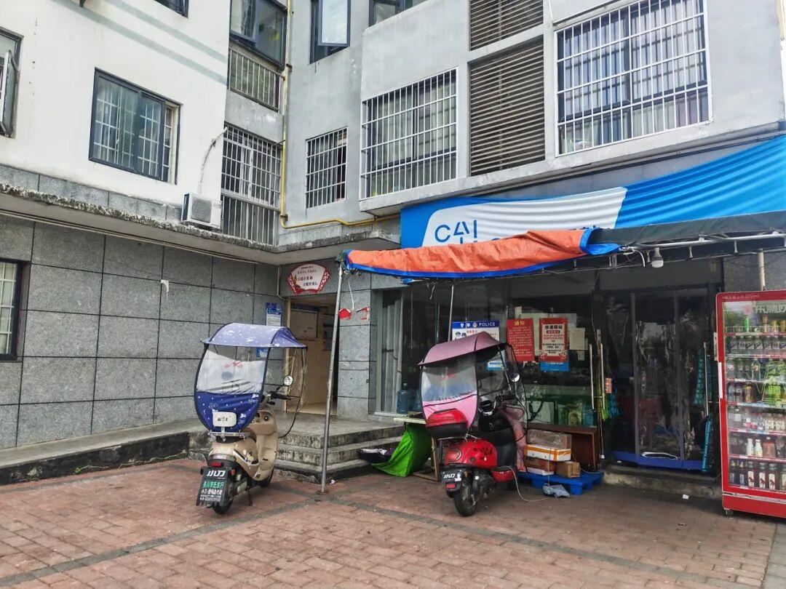
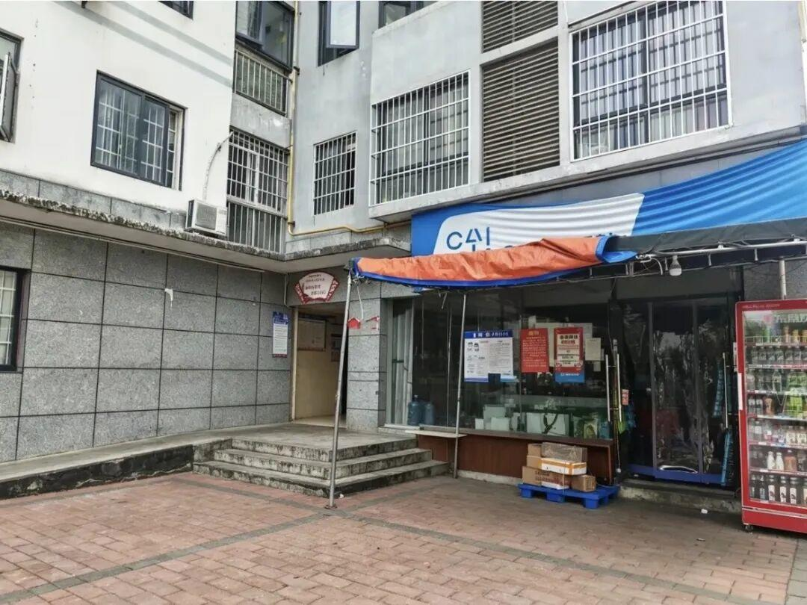

Across sources.
Across events.
News websites, fact-checking sources and social media. Public figures, social affairs, disasters and everyday scenes—collected with the image conditions encountered in real online circulation.
Photographic-looking AI images tied to real news events and online claims. Collected after actual web and social-media circulation.
News websites, fact-checking sources and social media. Public figures, social affairs, disasters and everyday scenes—collected with the image conditions encountered in real online circulation.
Ongoing discovery, screening and preliminary annotation track newly circulating images. Human-reviewed additions enter future releases; published evaluation sets remain fixed.
Each included image is manually checked against image-specific AI evidence, including creator disclosures, platform watermarks or fact-checking findings.
Explore selected AI-generated and edited images. Source context supports human verification; detectors receive the image alone.
Illustrative processed examples; not selected to represent images missed by every detector. Click an image to inspect it at full size.
V3 adds source-supported, human-reviewed real photographs for false-positive evaluation. A subset provides confirmed references for AI edits; these examples show direct editing originals.


Source & context ↗ · Click either image to enlarge.
Source & context ↗ · Click either image to enlarge.
The full real and AI cohorts are not completely source- or event-matched. Real labels reflect photographic provenance and human review, not a guarantee of a fully known editing history.
Evaluate AI-image detection alongside false alarms on real photographs. Balanced accuracy brings both sides into view.
The highest AI recall is 66.50%, accompanied by a 49.53% false-positive rate. The highest displayed balanced accuracy is 77.10%, combining 57.33% recall with 3.13% false positives.

External mean: nine benchmarks, equally weighted. Different test distributions; the gap does not isolate the effect of propagation degradation.
Recall, FPR and balanced accuracy are percentages. External mean averages nine benchmark recalls; drop = external mean − V3 recall (percentage points). — indicates no corresponding external evaluation. Bold highlights the best V3 value; external results retain their original evaluation configurations.
| Method | AI Recall ↑ | Real-image FPR ↓ | Balanced Acc ↑ | External Mean Recall ↑ | Recall Drop (pp) |
|---|---|---|---|---|---|
| Classification models | |||||
| DRCT | 29.67 | 14.11 | 57.78 | 50.86 | 21.19 |
| DDA | 37.67 | 8.46 | 64.60 | 81.66 | 43.99 |
| AIDE | 21.33 | 12.38 | 54.48 | 52.97 | 31.64 |
| B-Free | 36.33 | 3.13 | 66.60 | 81.17 | 44.84 |
| Effort | 28.00 | 20.69 | 53.66 | 59.35 | 31.35 |
| PGC | 15.50 | 14.58 | 50.46 | 64.35 | 48.85 |
| OmniAID | 30.83 | 5.80 | 62.52 | 87.08 | 56.25 |
| CO-SPY | 33.50 | 26.49 | 53.51 | 65.56 | 32.06 |
| PE-336 | 20.50 | 8.62 | 55.94 | 90.49 | 69.99 |
| PE-518 | 22.83 | 1.72 | 60.55 | 93.51 | 70.68 |
| Multimodal large language models | |||||
| FakeVLM | 66.50 | 49.53 | 58.49 | 90.63 | 24.13 |
| Veritas++ | 35.33 | 3.13 | 66.10 | 82.86 | 47.53 |
| BusterX++ | 24.67 | 14.11 | 55.28 | — | — |
| DeepVRM | 30.17 | 18.65 | 55.76 | — | — |
| FakeShield | 30.33 | 11.76 | 59.29 | — | — |
| UniGenDet | 45.00 | 9.56 | 67.72 | — | — |
| Qwen3.6-35B-A3B | 37.17 | 1.88 | 67.64 | 69.18 | 32.01 |
| Qwen3.8-27B | 54.50 | 12.38 | 71.06 | 77.21 | 22.71 |
| GLM-5.3-Flash | 46.50 | 1.41 | 72.54 | 85.45 | 38.95 |
| Kimi-K3 | 57.33 | 3.13 | 77.10 | — | — |
| DeepSeek-V4.1-Flash | 57.33 | 5.80 | 75.77 | — | — |
| MiniMax-M3 | 61.50 | 16.61 | 72.44 | — | — |
Real photographs are identical across versions; their FPR is unchanged. Δ = processed − raw, in percentage points.
| Method | Raw Recall ↑ | Processed Recall ↑ | Δ (pp) |
|---|---|---|---|
| Classification models | |||
| DRCT | 29.83 | 29.67 | -0.16 |
| DDA | 37.33 | 37.67 | +0.34 |
| AIDE | 16.50 | 21.33 | +4.83 |
| B-Free | 35.83 | 36.33 | +0.50 |
| Effort | 27.33 | 28.00 | +0.67 |
| PGC | 15.67 | 15.50 | -0.17 |
| OmniAID | 30.00 | 30.83 | +0.83 |
| CO-SPY | 31.50 | 33.50 | +2.00 |
| PE-336 | 19.67 | 20.50 | +0.83 |
| PE-518 | 22.00 | 22.83 | +0.83 |
| Multimodal large language models | |||
| FakeVLM | 64.50 | 66.50 | +2.00 |
| Veritas++ | 33.67 | 35.33 | +1.66 |
| BusterX++ | 23.83 | 24.67 | +0.84 |
| DeepVRM | 30.17 | 30.17 | +0.00 |
| FakeShield | 31.00 | 30.33 | -0.67 |
| UniGenDet | 43.00 | 45.00 | +2.00 |
| Qwen3.6-35B-A3B | 39.17 | 37.17 | -2.00 |
| Qwen3.8-27B | 55.50 | 54.50 | -1.00 |
| GLM-5.3-Flash | 50.00 | 46.50 | -3.50 |
| Kimi-K3 | 60.00 | 57.33 | -2.67 |
| DeepSeek-V4.1-Flash | 60.17 | 57.33 | -2.84 |
| MiniMax-M3 | 61.50 | 61.50 | +0.00 |
Images alone are provided to detectors. These are results on the curated V3 cohorts, not population-wide performance estimates. Full result table ↗
AI-image recall (%) throughout this view—not balanced accuracy. WildAIGC uses V3 processed images (600 AI images); external columns retain their existing benchmark evaluations. External mean equally weights the nine benchmarks. Differences may reflect both dataset and evaluation configuration changes.
| Method | Standard benchmarks | In-the-Wild benchmarks | WildAIGC In-the-Wild · ours | Common-set mean 9 benchmarks ↑ | |||||||
|---|---|---|---|---|---|---|---|---|---|---|---|
| EvalGen | synthbuster | UnivFD | AIGIBench | Chameleon | SynthWildx | WildRF | RRDataset | ITW-SM | WildAIGC V3 · processed | ||
| Classification models | |||||||||||
| DRCT | 50.93 | 55.93 | 21.96 | 56.50 | 58.18 | 59.75 | 58.38 | 36.27 | 59.82 | 29.67 | 50.86 |
| DDA | 96.85 | 97.57 | 83.59 | 74.45 | 70.78 | 92.91 | 87.24 | 47.00 | 84.54 | 37.67 | 81.66 |
| AIDE | 56.26 | 65.27 | 81.01 | 70.90 | 33.98 | 48.74 | 55.14 | 22.38 | 43.08 | 21.33 | 52.97 |
| B-Free | 91.28 | 94.23 | 82.66 | 71.89 | 62.01 | 98.52 | 93.19 | 47.86 | 88.86 | 36.33 | 81.17 |
| Effort | 54.38 | 97.03 | 91.20 | 83.26 | 51.91 | 34.71 | 69.30 | 15.10 | 37.26 | 28.00 | 59.35 |
| PGC | 57.19 | 81.07 | 91.99 | 81.00 | 16.03 | 71.05 | 88.43 | 27.45 | 64.92 | 15.50 | 64.35 |
| OmniAID | 97.21 | 83.43 | 80.77 | 71.15 | 90.86 | 93.80 | 98.59 | 72.87 | 95.04 | 30.83 | 87.08 |
| CO-SPY | 92.68 | 75.53 | 42.44 | 61.62 | 52.19 | 73.78 | 75.68 | 64.33 | 51.82 | 33.50 | 65.56 |
| PE-336 | 99.96 | 96.53 | 99.45 | 97.00 | 76.06 | 90.62 | 96.54 | 77.97 | 80.28 | 20.50 | 90.49 |
| PE-518 | 99.97 | 99.73 | 99.42 | 96.09 | 82.16 | 94.68 | 98.81 | 82.29 | 88.40 | 22.83 | 93.51 |
| Multimodal large language models | |||||||||||
| Qwen3.6-35B | 87.75 | 51.57 | 53.30 | 46.05 | 57.69 | 86.56 | 91.57 | 55.10 | 93.06 | 37.17 | 69.18 |
| FakeVLM | 99.00 | 95.87 | 92.70 | 94.09 | 99.53 | 94.90 | 92.76 | 58.70 | 88.10 | 66.50 | 90.63 |
| Veritas++ | 98.90 | 83.00 | 44.30 | 69.77 | 93.24 | 93.21 | 97.41 | 70.50 | 95.40 | 35.33 | 82.86 |
| Qwen3.8-27B | 87.95 | 64.60 | 71.10 | 73.97 | 69.35 | 86.78 | 86.05 | 66.90 | 88.20 | 54.50 | 77.21 |
| GLM-5.3-Flash | 98.75 | 82.33 | 72.50 | 70.07 | 89.98 | 92.84 | 95.89 | 73.00 | 93.70 | 46.50 | 85.45 |
Common mean: EvalGen, synthbuster, UnivFD, AIGIBench, Chameleon, SynthWildx, WildRF, RRDataset and ITW-SM. † Fixed subsets on large dimensions; full evaluation on smaller dimensions.
Trace the event. Link the evidence. Review the image. General-purpose detector outputs are not used for sample selection.
A curated challenge set, not a representative sample of the entire internet. Recorded sources and image dimensions make its scope visible.
AI-image cohort only (600 images). Resolution compares raw and processed images by shorter-edge length; real photographs are excluded. Source counts describe recorded report websites, not necessarily original social platforms.
@misc{yu2026wildaigcbench,
title={WildAIGC-Bench: Can AI Image Detectors Handle the Wild? A Benchmark of Generated and Edited Images in Online Circulation},
author={Zijian Yu and Hangwei Zhang and Jun Lan and Huijia Zhu and Weiqiang Wang and Jianfu Zhang},
year={2026},
eprint={2610.28087},
archivePrefix={arXiv},
primaryClass={cs.CV},
url={https://arxiv.org/abs/2610.28087}
}Third-party image rights remain with their respective holders.